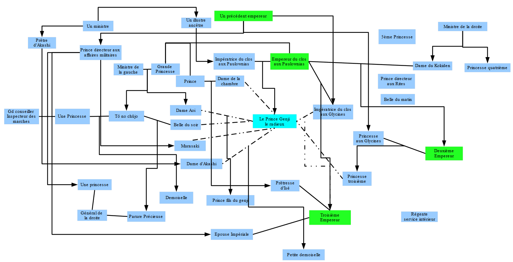

Premier long roman de l’histoire de l’humanité, énormément de personnages, réflexions psychologiques avec du recul (l’auteur étant elle-même une membre de la cour de l’empereur).
Assez moderne dans les réflexions psychologiques.
Il y a plusieurs fois des "digressions" qui développent une réflexion sur les qualités de la peinture par exemple, le texte est en outre émaillé de petites descriptions de la nature, des saisons, par petites touches.
Quasiment chaque poème est rapidement catégorisé en fonction de sa qualité, de son style...
Les émotions y sont assez vivement et justement décrites : la passion, la honte, la peur, la séduction...

A force d'observer inlassablement la manière d'être des hommes qui vivent en ce monde, en bien comme en mal, à force de les écouter avec passion, l'on découvre des choses que l'on aimerait transmettre à la postérité, et c'est ainsi que, ne les pouvant plus garder pour soi, l'on en vient à les coucher par écrit.
590, Livre 25, Les lucioles
La nuit avançait et le froid commençait à se faire sentir. La lune du vingtième jour, qui s'était fait attendre, dardait ses premiers rayons :
- Elle laisse à désirer, la nuit de lune indécise du printemps ! La mélancolie d'automne, quand à pareille musique vient se mêler le chant des insectes, lui donne une résonance particulière, d'une incomparable émotion, dit Monseigneur, et le sire Général :
- Par une nuit d'automne, sous une lune sans voile, quand rien ne fait obstacle à la vue, l'on a certes l'impression que la cithare ou la flûte sonne plus clair, mais l'aspect d'un ciel que l'on dirait composé tout exprès pour s'y accorder, ou la rosée sur les fleurs, invitent les yeux à se détourner et l'esprit se disperse, ce qui met des bornes à l'émotion. Mais entendre sous un ciel de printemps, à l'indécise lueur d'une lune qui, à grand-peine, filtre à travers la brume, le souffle de la flûte qui doucement accompagne les accords de la cithare, est-il plaisir qui vaille celui-là ? Tandis que le son de la flûte perd à être trop brillant et limpide. "La femme s'émeut du printemps", a dit un ancien, et je crois en effet qu'il a dit vrai. Car l'heure la plus propice et la plus en harmonie avec la musique est à coup sûr le crépuscule, au printemps, dit-il.
818, Livre 35, Jeunes herbes 2
2021-01 : Très long et difficile de suivre les personnages très nombreux, toujours appelés par leurs titres, qui évoluent au fil de l'histoire...
Retour à l'accueil des fiches de lecture
Retour à l'accueil général